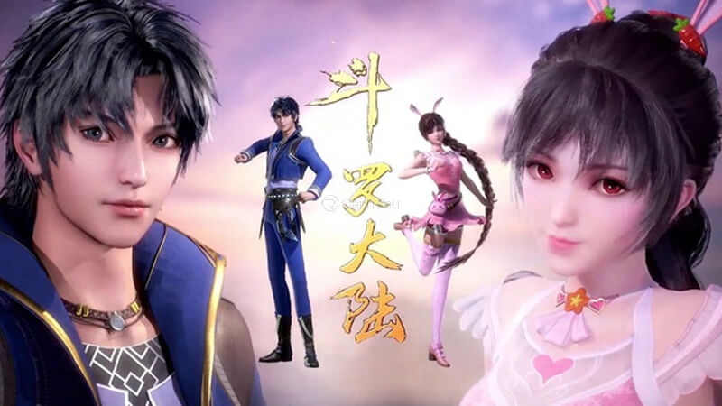
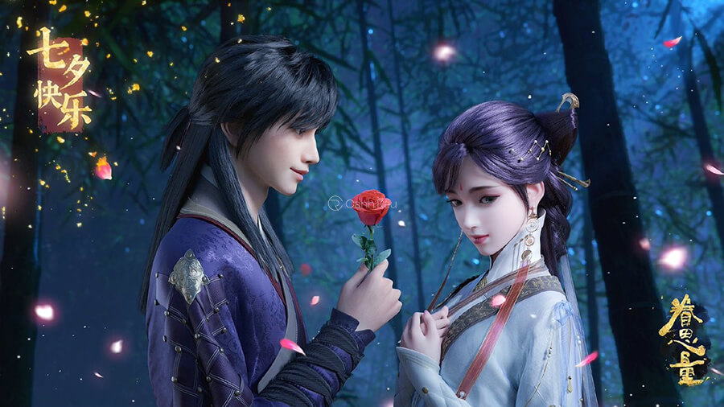
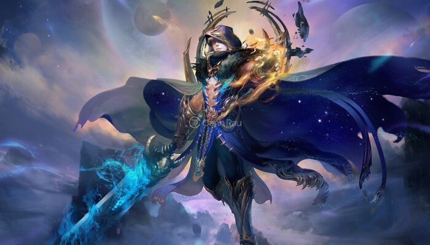
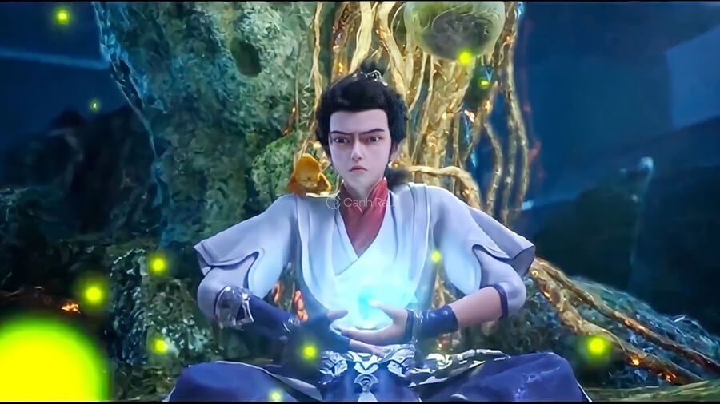
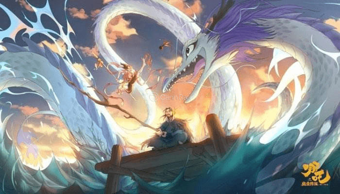
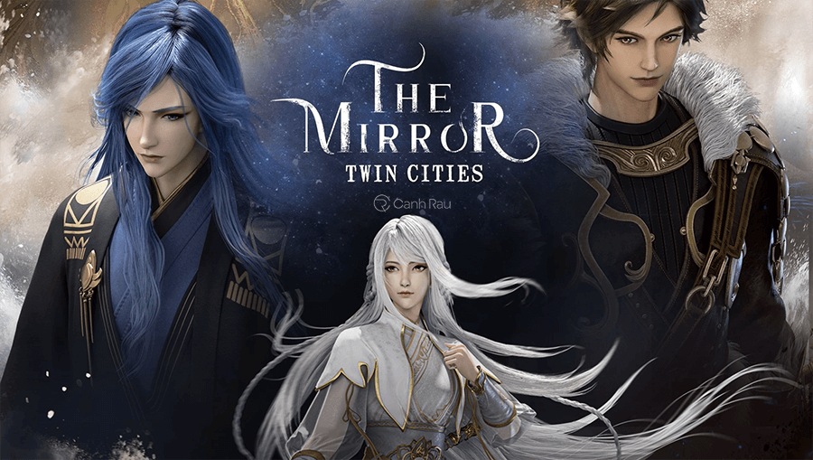
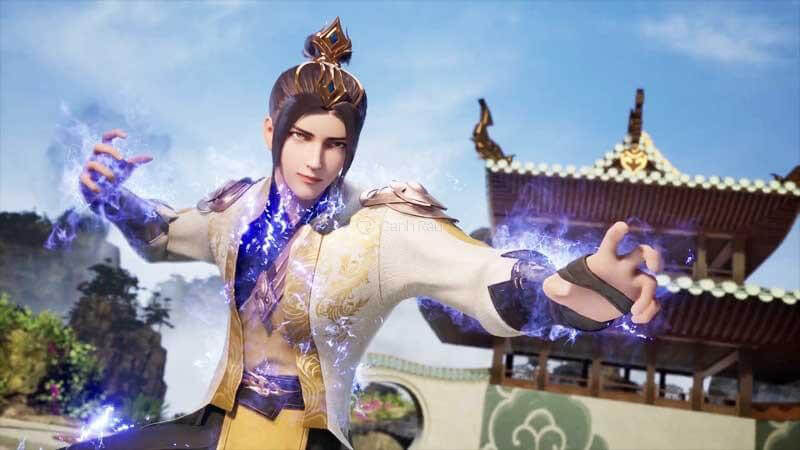
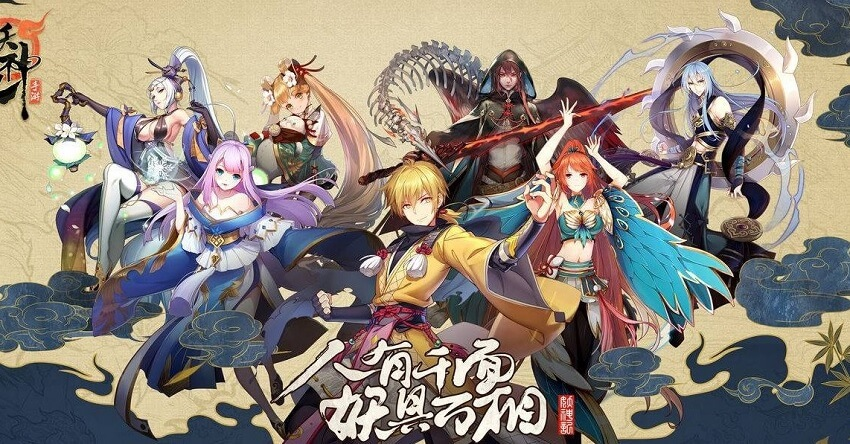

-Mở đầu cho top phim hoạt hình 3D Trung Quốc hay nhất hiện nay phải kể đến Đấu La Đại Lục. Nội dung phim kể về nhân vật Đường Tam với một kiếp được trọng sinh và xuyên không đến một thế giới mới, nơi có thể tu luyện sức mạnh bản thân bằng hồn lực và hồn hoàn có tên gọi là Đại Lục Đấu La.
-Đường Tam kiếp trước là một đệ tử ngoại môn của Đường Môn bởi vì muốn học được tuyệt kỹ võ học của nội môn mà đã bị truy sát. Đường Tam vì muốn rửa tội oan nên quyết định nhảy vực tự sát tuy nhiên sau đó lại phát hiện ra mình đã xuyên không đến thế giới Đại Lục Đấu La.

Đấu La Đại Lục phim hoạt hình 3D hay
-Ở thế giới mới vì còn sót phần trí nhớ của kiếp trước nên cậu đã vận dụng những tuyệt kỹ để hỗ trợ trong việc tu luyện hồn lực. Đồng thời, khi rời nhà để đi tu luyện, cậu đã bắt gặp được Tiểu Vũ và cùng cô tham gia vào học viện Sử Lai Khắc. Tại đây, Đường Tam còn gặp thêm được một nhóm bạn và đã cùng nhau lập thành nhóm Sử Lai Khắc Thất Quái tạo nên một lịch sử vinh quang nhất từ trước tới nay.
-Câu chuyện bắt đầu từ một tỉnh An Dương, một lãnh thổ của quý tộc có tên gọi Tuyết Ưng Lĩnh. Bước chân của những con người khổng lồ đang sống giữa dòng chảy dung nham, nó có thể phá hủy ngay cả ngôi thành trì to lớn. Những Ác ma nơi vực sâu luôn luôn muốn tiến vào thế giới tươi đẹp này. Mà khi thần linh giáng thế, thì lại đi giữa nhân gian để truyền bá sự vinh quang của chính mình.
-Nhưng tất cả thế giới lại do một đế quốc tên Long Sơn cai trị. Đây là đế quốc với sự cai trị của con người. Tất cả nguồn tri thức lâu đời được bảo quản và cất giữ tại nơi luôn có người canh giữ và bảo vệ giữa bầu trời mặt đất và cả biển cả.
Phim hoạt hình 3D Trung Quốc hay nhất
-Nội dung của bộ phim hoạt hình 3D hay nhất Trung Quốc này bắt đầu với một hòn đảo chuyên chỉ để giam giữ những thần tiên đã và đang phạm tội tên Tư Lượng Đảo. Tại đây, trong một lần cha của Kính Huyền vì muốn phá bỏ được kết giới để có thể trốn thoát mà vô tình làm cho nhiều người bị liên lụy và chết đi.
-Bắt đầu kể từ lúc đó, Kính Huyền và cô em gái nuôi là một trong số những người của nhân tộc Đồ Lệ đã lạc mất nhau. Một thời gian sau đó khi đã trưởng thành, Kính Huyền vẫn luôn tìm kiếm manh mối về sự việc của năm đó cha cậu là người bị hại, cùng cô em gái của mình. Mối lương duyên có cho họ gặp nhau.Hãy cùng xem bộ phim hoạt hình 3D Trung Quốc này để tìm hiểu thêm.

Phim hoạt hình với tạo hình đồ họa và âm thanh đặc sắc
-Phàm Nhân Tu Tiên với nội dung phim xoay quanh nhân vật chính Hàn Lập là một con người bình thường với ước mơ có thể được bước đi trên con đường tu tiên. Cho dù, con đường này sẽ có thể xảy ra rất nhiều điều nguy hiểm, tuy nhưng cùng với sự thông minh và suy nghĩ thấu đáo mọi việc đã khiến cậu vượt qua được tất cả khó khăn và đạt được mục đích. Bộ phim với được đầu tư kỹ lưỡng về âm thanh cùng đồ hoạ cực sắc nét đẹp đẽ đã khắc hoạ được rõ nét của từng nhân vật.

Bộ phim hoạt hình 3D tu tiên hay và hài hước
-Nội dung bộ phim hoạt hình 3D Trung Quốc hấp dẫn này kể về câu chuyện cuộc đời của một cậu nhóc tên Thạch Hạo. Bởi vì bản thân cậu mang trong mình Chí Tôn Cốt là xương cốt chí tôn vậy nên cậu luôn bị người khác hãm hại tìm cách cướp lấy.
-Điều này đã khiến cậu luôn phải lẩn trốn đến những nơi hẻo lánh như Thạch Thôn để trốn tránh, điều này cũng làm cho cả cha mẹ cậu đều bị mất tích ngay trong Thái Cổ Thần Sơn ấy. Từ đây, cậu bắt đầu cho cuộc phiêu lưu tìm cách để sử dụng Chí Tôn Cốt trong cơ thể mình dưới sự giúp đỡ của một tế linh tên Liễu Thần. Ngoài ra, cậu đã thề rằng sẽ trả thù những người đã từng hại gia đình và tất cả mọi thứ của bản thân.

Thiếu niên Thạch Hạo ngây thơ vô số tội trong Thế Giới Hoàn Mỹ
-Đây là bộ phim hoạt hình 3D Trung Quốc hay nhất, tiếp nối cho series phim cải biên từ bộ tiểu thuyết Phong Thần Diễn Nghĩa. Sau lần đại chiến phong thần, Khương Tử Nha đệ tử của Côn Luân là người có công dẫn đầu trong chúng thần về việc đánh bại lũ yêu hồ, lật đổ được triều đại nhà Thương tàn ác và cũng là người cố công trong các trận đại chiến đã được thiên giới cất nhắc trong vị trí cao quý nhất.
-Tuy nhiên trong chính lúc chuẩn bị cho vinh danh thì ông lại mắc phải một lỗi lầm khá nghiêm trọng, khiến cho bản thân bị tước mất thần lực và bị đày xuống nhân gian. Với nội dung nhấn mạnh về sự hy sinh quên mình để bảo vệ người khác cùng việc tạo nét nhân vật mới lạ khiến cho bộ phim hoạt hình 3D Trung Quốc này có sức hút rất lớn, khiếm cho bộ phim đã tạo nên kỷ lục phòng vé ngay ngày đầu công chiếu.

Khương Tử Nha đạt kỷ lục phòng vé ngay ngày công chiếu đầu tiên
-Kính Song Thành là một trong top phim hoạt hình 3D Trung Quốc hay nhất được ra mắt vào năm 2020. Với cốt truyện phim được chế tác từ cuốn tiểu thuyết cùng tên nổi tiếng của tác giả Thương Nguyệt. Nội dung kể về Na Sênh là một cô gái nhỏ nhắn có tính cách vui vẻ, lạc quan và yêu đời, cô đến từ vùng Trung Châu.
-Vì một lý do không rõ mà phải tìm đến Vân Hoang để nhờ cậy và tránh nạn. Nhưng chính tại nơi này, cô đã phải bắt gặp rất nhiều hiện tượng kỳ lạ. Số phận đưa đẩy thế nào mà Na Sênh gặp được Tô Ma, một người độc ác nhưng lại có một quá khứ bi thương. Anh ta đã từng gián tiếp trong vụ việc về cái chết một Vương phi của đất nước, khiến tại nơi đó đã rơi vào diệt vong.

Poster tuyệt đẹp của phim hoạt hình 3D hay Kính Song Thành
-Bộ phim hoạt hình 3D Trung Quốc này có nội dung kể về cuộc hành trình đi tìm mẹ của một thiếu niên mù tên Lang Minh và câu chuyện trở thành anh hùng của cậu khi đã cứu thế giới thoát khỏi một quái vật trong tứ đại hung thú Thao Thiết.
-Lang Minh là một thiếu niên mắt bị mù và đã mồ côi cha từ nhỏ, chỉ có hai mẹ con cùng nhau sống nương tựa bằng việc chuyên đi lừa đảo với đánh bạc, tuy không được khá giả nhưng tình cảm của họ lại vô cùng sâu đậm. Người mẹ vì mong muốn con mình có thể sáng mắt trở lại nên trao đổi với Thao Thiết, bà sẽ phải biến thành La Sát là thức ăn của Thao Thiết.
Phim hoạt hình 3D Trung Quốc hay nhất hiện nay bạn không nên bỏ qua
-Võ Thần Chúa Tể là một trong những bộ phim hoạt hình 3D Trung Quốc được yêu thích nhất trong năm 2020. Phim với nội dung kể về Tần Trần nhân vật được coi là đệ nhất cao thủ trong giới võ lâm. Nhưng khi anh gặp phải sự phản bội từ người bạn thân nhất mà bất ngờ đã ngã xuống Võ vực.
-300 năm sau, Tần Trần được đầu thai trở thành một người con riêng của một Vương gia, vì thế anh ta luôn bị bắt nạt, bị ức hiếp. May thay, khả năng võ công cao cường của kiếp trước mà Tần Trần đã luyện được thần công cái thế và từng bước đã lấy lại vị trí của mình.

Top 20 phim hoạt hình 3D Trung Quốc hay nhất
-Yêu Thần Ký là một bộ phim hoạt hình 3D Trung Quốc hay mà bạn không nên bỏ qua trong top list này. Nội dung xoay quanh Thánh Linh Đại Lục Nhiếp Ly, một Yêu Linh Sư rất mạnh là một trong những người đứng đầu giới. Tuy nhiên, một lần trong trận chiến ác liệt cùng với Hoàng Đế, Nhà Hiền Triết và Sáu Vị Thần Thú, Nhiếp ly đã thiệt mạng. Nhưng sau đó, anh đã may mắn đã được tái sinh một lần nữa và quay trở lại quá khứ vào khi anh 13 tuổi. Cùng với vốn hiểu biết đã có và kinh nghiệm tu luyện của trước đây, anh đã nhanh chóng lấy lại vị thế của mình.

Top phim hoạt hình trung quốc hấp dẫn nhất
-Bộ phim hoạt hình 3D Trung Quốc tiếp theo mà chúng tôi muốn giới thiệu đến bạn trong danh sách này đó chính là Đấu Phá Thương Khung. Phim được phát sóng lần đầu vào năm 2018 và đến nay vẫn được rất nhiều khán giả yêu thích. Battle through the heavens có tất cả 12 tập, mỗi tập kéo dài 25 phút với những tình tiết lôi cuốn và vô cùng hấp dẫn.
-Nhân vật chính của tác phẩm là Tiêu Viêm. Anh được mệnh danh là thiên tài tu luyện đấu khí. Từ khi mới chỉ 11 tuổi, Tiêu Viêm đã thành công đột phá Thập Đoạn Đấu Chi Khí. Anh sau đó trở thành đấu thủ tài năng và tài giỏi nhất của gia tộc họ Tiêu. Mọi chuyện bắt đầu kể từ khi Tiêu Viêm lên 12 tuổi, anh mất đi toàn bộ năng lực và chỉ giữ lại được Tam Đoạn Đấu Chi Khí.
-Trong 3 năm liên tiếp, nhà họ Tiêu đón nhận nhiều tin xấu làm mất đoàn kết, ảnh hưởng đến sự hưng thịnh của cả gia tộc. Tiêu Viêm tuyệt vọng chỉ muốn quyên sinh thì một linh hồn thoát ra từ chiếc nhẫn trên tay của anh đã khiến cuộc đời của nhân vật chính thay đổi.
-Người cha của Tiêu Viêm sau đó bị Vân Lam bắt. Để cứu cha thoát khỏi nguy hiểm, Tiêu Viêm đã phải đương đầu với rất nhiều khó khăn, thử thách. Liệu chàng trai tài năng ấy có thể cứu cha và vực lại được sự hưng thịnh của gia tộc? Mời bạn hãy cùng xem bộ phim hoạt hình 3D Trung Quốc hấp dẫn này để biết câu trả lời nhé.